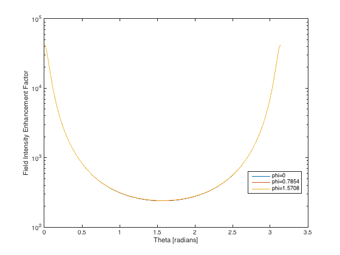
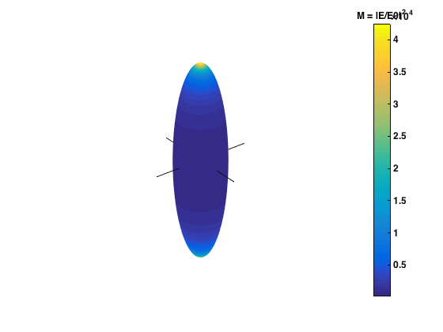
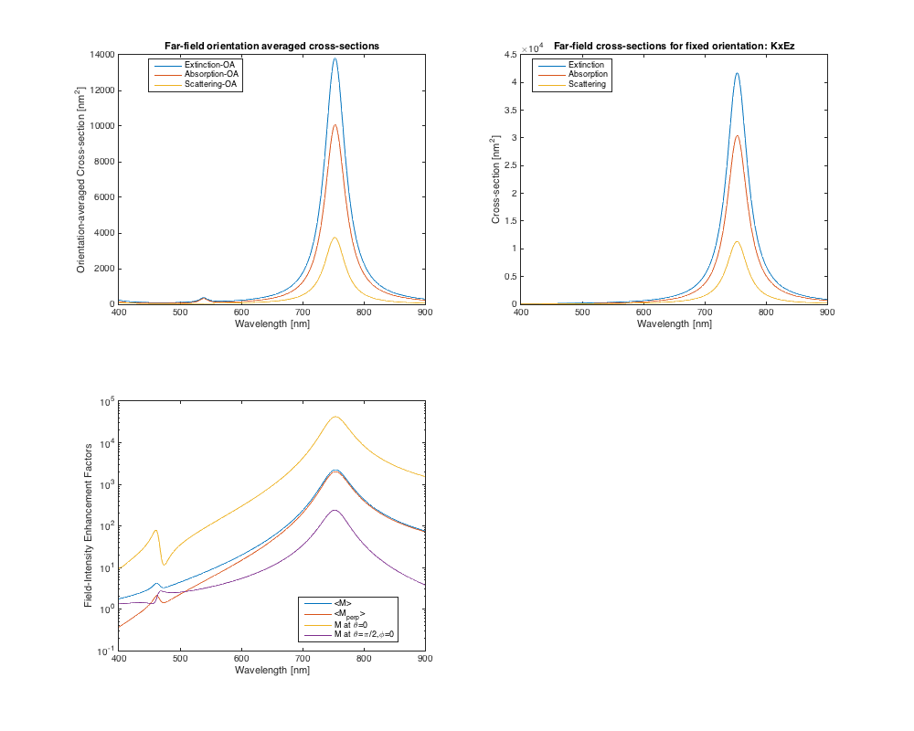

ScriptTutorialSpectrum
This script provides a step-by-step tutorial to solve the scattering problem as a function of wavelength, with explicit calls to the low-level functions used in the calculations of intermediate quantities. As such, this script provides a more in-depth understanding of the code than provided by the other example scripts. For a more application-oriented perspective, the "ScriptSolve" family of scripts use pre-defined functions performing the same steps internally, but invisible to the end-user.
Contents
- Description
- Initialization
- Scatterer properties
- Parameters of the scattering problem
- Parameters governing convergence
- Defining number of multipoles for each step
- Calculation of T-matrix and optical properties
- loop over lambda to calculate the wavelength-dependent T-matrix
- Further post-processing for well-defined orientation
- Example of plots at fixed wavelength
- Example of plots as a function of wavelength
Description
The example considers a silver prolate spheroid of semi-axes 20 x 80 nm (aspect ratio 4), in water. The script calculate the T-matrix up to multipole order N and for all 0<=m<N From it various optical properties are also derived:
- Orientation-averaged extinction, scattering, and absorption cross-sections.
- Extinction, scattering, and absorption cross-sections for a given incident field (KxEz in this example, meaning incident along x and polarized along z)
- Surface fields (angular variation and surface-averaged intensity) for a given incident field (KxEz here)
Initialization
Note that you need to run InitPath in the root folder first to add required folders to the Matlab path so that functions can be called Alternatively, uncomment the following line
run('..\InitPath');
clear all close all fprintf('Initialization and finding NQ and NB...'); tic; % for timer
Initialization and finding NQ and NB...
Scatterer properties
The following parameters should be defined:
- a: semi-axis along x,y
- c: semi-axis along z
- k1: [L x 1] wavevectors in embedding medium (of refractive index nM) (k1=2*pi*nM/lambda)
- s: [L x 1] relative refractive index (s=n_Particle / nM) k1 and s may be wavelength-dependent In addition, the following parameter will be needed if field expansion coefficients and/or the cross-sections for a given fixed orientation are thought:
- stIncPar: structure defining the incident excitation, can be obtained from calling vshMakeIncidentParameters
For actual field calculations (such as surface fields), we will also need
- nNbThetaPst: Number of theta's for postprocessing (must usually be larger than nNbTheta for accurate surface averaging)
- lambda: [L x 1] wavelength (in free space) [in the same unit as a, c, k1^{-1}]
- epsilon2: [L x 1] relative dielectric constant of scatterer (possibly complex)
- epsilon1: [L x 1] relative dielectric constant of embedding medium (real positive) Note that the latter three are not independent if k1 and s have been set
Parameters of the scattering problem
We define parameters for a gold nanorod in water, modeled as a prolate spheroid

a=10; c=40; h = c/a; % aspect ratio, h=c/a for prolate spheroids lambda = (400:2:900)'; % [L x 1] in nm epsilon2 = epsAg(lambda); % [L x 1] Dielectric function of particle epsilon1 = 1.33^2; % scalar or % [L x 1] Dielectric function of medium (water here) % Incident field properties (if required) sIncType='KxEz'; % incident along x and polarized along z % type doc vshMakeIncidentParameters for more options (plane wave excitation only) % note that only k1 and s are needed for the T-matrix calculation % but other parameters are needed for E-field calculations k1 = 2*pi*sqrt(epsilon1)./lambda; % [L x 1] s = sqrt(epsilon2)./sqrt(epsilon1); % [L x 1] relative refractive index of particle xmax = max(a,c)*k1; % maximumum size parameter xmax= k1 * max(a,c) % For convenience, k1 and s are stored in a struct stParamsAll.k1=k1; stParamsAll.s=s;
Parameters governing convergence
The following parameters will be needed:
- N: Number of multipoles required for T-matrix
- abmvec: Vector containing the values of m for which T is computed Only m>=0 is needed and m<=N. For all m, use absmvec=0:N (= [0,1,2 ..., N] )
- NQ: Number of multipoles for the P and Q matrix, NQ>=N
- NB: Number of multipoles to compute the Bessel functions in the improved algorithm, NB>=NQ.
- nNbTheta: Number of theta's for the Gaussian quadrature In this example script, these are chosen constant (independent of lambda)
% Maximum multipole order for T-matrix and series expansions of fields N = 20; % m-numbers used in the calculations % For most incident excitations and for orientation-averaged properties, % all |m|<=N need to be considered: absmvec = (0:1:N)'; % Advanced users can define the stIncPar first and use the following instead % absmvec = stIncPar.absmvec.'; % or specify a single m-value for testing for example, i.e. % absmvec = 1; % m=1 only % Number of points for Gaussian quadratures to compute integrals in P and Q matrices % By symmetry, points are only computed from theta=0 to pi/2 nNbTheta = 50; % Make structure describing spheroidal geometry and quadrature points for % numerical integrations stGeometry = sphMakeGeometry(nNbTheta, a, c); % Make structure with incident field parameters stIncPar = vshMakeIncidentParameters(sIncType, N);
Defining number of multipoles for each step
The T-matrix and corresponding field expansion coefficients will be calculated up to n=N for all m in absmvec (note that m>=0).
% Here, we use simply use NQ = N and check convergence of the % results by running a second calculation for a larger N % [see JQSRT 160, 29 (2015)]. NQ = N; % Maximum multipole order for computing P and Q matrices % P and Q are calculated using the stable and accurate algorithm in % [JQSRT 123, 153 (2013)]. % For this algorithm we need to specify how many extra order are needed % to compute Bessel function products to the highest accuracy % This can be estimated with the following function NB=sphEstimateNB(NQ, stGeometry, stParamsAll); % or can be specified by user (advanced), for example % NB=NQ; fprintf('\n... done in %.g seconds\n', toc);
... done in 0.7 seconds
Calculation of T-matrix and optical properties
fprintf('\nLoop over lambda...\n'); tic; % Coefficients of incident wave do not change with wavelength stIncEabnm=vshGetIncidentCoefficients(N,stIncPar); % Initialize variables to store results for each wavelength stAbcdnm.anm = stIncEabnm.anm; % [1 x P] where P=N(N+2) stAbcdnm.bnm = stIncEabnm.bnm; % [1 x P] where P=N(N+2) P=N*(N+2); % number of elements in p-index L=length(lambda); stAbcdnm.pnm = zeros(L,P); stAbcdnm.qnm = zeros(L,P); stAbcdnm.cnm = zeros(L,P); stAbcdnm.dnm = zeros(L,P); stCoa = struct(); stCoa.Csca = zeros(L,1); stCoa.Cext = zeros(L,1); stCoa.Cabs = zeros(L,1);
Loop over lambda...
loop over lambda to calculate the wavelength-dependent T-matrix
The T/R matrices are not stored to avoid memory issues, but all the physical properties and field expansion coefficients can be calculated in the loop and stored
bGetR = true; % To calculate R and internal field stParams1 = struct(); % temp structure for simulation stParams1.bOutput = false; % less verbose output fprintf('lambda = '); for lInd=1:length(lambda) % uncomment next line for real-time progress % fprintf('\b\b\b%.3g', lambda(lInd)); stParams1.k1 = stParamsAll.k1(lInd); stParams1.s = stParamsAll.s(lInd); % This calculates P and Q using the algorithm of [JQSRT 123, 153 (2013)] CstPQa = sphCalculatePQ(NQ, absmvec, stGeometry, stParams1, NB); % Get T=-PQ^{-1} and R=Q^{-1} for all m using the inversion procedures % described in [JQSRT 123, 153 (2013)]. CstTRa = rvhGetTRfromPQ(CstPQa,bGetR); % If only the T-matrix is required, use instead bGetR=false % If needed, discard higher order multipoles % (which are affected by the finite size of P and Q) if NQ>N CstTRa = rvhTruncateMatrices(CstTRa, N); end % T and R matrices now include N multipoles % If required, one may symmetrize the T-matrix (this assumes that the upper % triangular parts of the matrices are correct, see JQSRT 160, 29 (2015)) % CstTRa = rvhGetSymmetricMat(CstTRa, {'st4MT'}); % Calculate the (Ext, Abs, Sca) orientation-averaged cross-sections stQoaOneLambda = rvhGetAverageCrossSections(stParams1.k1, CstTRa); stCoa.Csca(lInd) = stQoaOneLambda.Csca; stCoa.Cext(lInd) = stQoaOneLambda.Cext; stCoa.Cabs(lInd) = stQoaOneLambda.Cabs; % Get the field expansion coefficients from T and R for a given incident % excitation (defined earlier in stIncPar) stAbcdnmOneLambda = rvhGetFieldCoefficients(N, CstTRa, stIncPar,stIncEabnm); stAbcdnm.pnm(lInd,:) = stAbcdnmOneLambda.pnm; stAbcdnm.qnm(lInd,:) = stAbcdnmOneLambda.qnm; if bGetR % internal fields only if R has been calculated stAbcdnm.cnm(lInd,:) = stAbcdnmOneLambda.cnm; stAbcdnm.dnm(lInd,:) = stAbcdnmOneLambda.dnm; end end fprintf('\n\nT-matrices (N = %d) ... done in %.g seconds.\n', N, toc);
lambda = T-matrices (N = 20) ... done in 4e+01 seconds.
Further post-processing for well-defined orientation
fprintf('\nPost-processing and plotting ...\n', N, toc); % Calculate the (Ext, Abs, Sca) cross-sections for fixed orientation % This can be done for all wavelengths in one go stQ = pstGetCrossSections(k1, stAbcdnm); % For surface-properties, we need to re-define the geometry with theta over [0;pi] % and with more integration points, to ensure finer evaluation of the % surface fields and of their averages nNbThetaPst = 360; % number of theta for evaluating fields stRtfuncPst = sphMakeGeometry(nNbThetaPst, a, c); % new geometry with more points % It is also necessary to extend the range of theta over [0;pi] instead of % [0;pi/2] stRtfuncPst=rvhGetThetasForAverage(stRtfuncPst); % get thetas over entire range [0,pi] stGeometryPts=sphMakeGeometry(0, a, c, [0; pi/2]); % This is to evaluate the field at theta=0 and pi/2 % For convenience this will prepare a result structure for postprocessing stResE=pstMakeStructForField(stAbcdnm, N, lambda, epsilon2, epsilon1, stIncPar,a,c); % Calculates the surface electric field E partial series expansion (for each m) % on the surface as well as average values M=|E|^2, F=|E|^4 % This is done for all wavelengths stEsurf=pstSurfaceField(stResE,stRtfuncPst);
Post-processing and plotting ...
Example of plots at fixed wavelength
lambda0 = 754; % Position of resonance in extinction % The following plots the surface field at one or more given % phi (as a function of theta) for a fixed lambda0 phi0=[0,pi/4,pi/2]; M = pstGetThetaDepFieldIntensity(stEsurf,phi0,lambda0); % [3 x T] figure('Name',['Theta-dependence of surface-field intensity M=|E|^2 for fixed phi at lambda=',num2str(lambda0)]); semilogy(stEsurf.theta, M); legend({['phi=', num2str(phi0(1))], ... ['phi=', num2str(phi0(2))], ... ['phi=', num2str(phi0(3))]}, ... 'Location', 'Best'); xlabel('Theta [radians]'); ylabel('Field Intensity Enhancement Factor'); % The following makes a 3D surface plot of the surface % field everywhere on the surface (note that this requires to recompute % the surface fields). Use 90x90 pts here: pstPlotAllSurfaceField(90,stResE,lambda0); 
Example of plots as a function of wavelength
% Calculates field intensity at theta=0, pi/2, and phi=0 stEsurfPts=pstSurfaceField(stResE,stGeometryPts); stEphi=vshEthetaForPhi(stEsurfPts,0); Mpts=abs(stEphi.Er).^2+abs(stEphi.Et).^2+abs(stEphi.Ef).^2; fh = figure('Name','Wavelength-dependent properties'); set(fh, 'Position', [100, 100, 1000, 800]); subplot(2,2,1) plot(lambda, [stCoa.Cext, stCoa.Cabs, stCoa.Csca]); legend({'Extinction-OA', 'Absorption-OA', 'Scattering-OA'},'Location','Best'); xlabel('Wavelength [nm]'); ylabel('Orientation-averaged Cross-section [nm^2]'); title('Far-field orientation averaged cross-sections'); subplot(2,2,2) plot(lambda, [stQ.Cext, stQ.Cabs, stQ.Csca]); legend({'Extinction', 'Absorption', 'Scattering'},'Location','Best'); xlabel('Wavelength [nm]'); ylabel('Cross-section [nm^2]'); title(['Far-field cross-sections for fixed orientation: ', stIncPar.type]); subplot(2,2,3) semilogy(lambda, [stEsurf.MLocAve,stEsurf.MLocPerpAve,Mpts]); legend({'<M>', '<M_{perp}>', 'M at \theta=0', 'M at \theta=\pi/2,\phi=0'},'Location','Best'); xlabel('Wavelength [nm]'); ylabel('Field-Intensity Enhancement Factors');